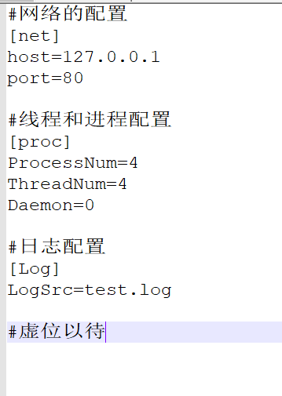
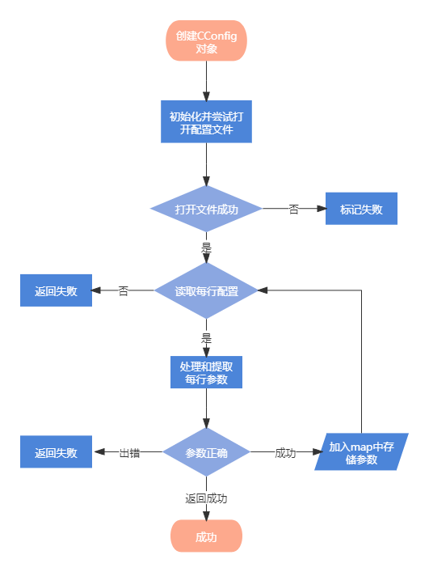

配置文件读取思路（CConfig类）：
- 配置文件读取应该在程序的开始进行初始化，从配置文件中读取程序的相关配置和用户自定义的信息。如：程序的进程的启动个数、每个进程应该启动的线程数的个数、程序在Linux中是否以守护进程方式进行启动等。配置文件的设计应该具有美观、整洁等特点。

- 以 ‘#’ 开始的每一行配置应该当作提示内容，在读取时应该直接跳过
- 当读取到 “[” 符号时，应该进行跳过方便我们对配置文件的分组
- 其次应该注意到对空格的过滤，防止空格对我们读取进行干扰
配置类的运行思路：

代码如下（含详细注释）：
1 | /* |
1 | /* |